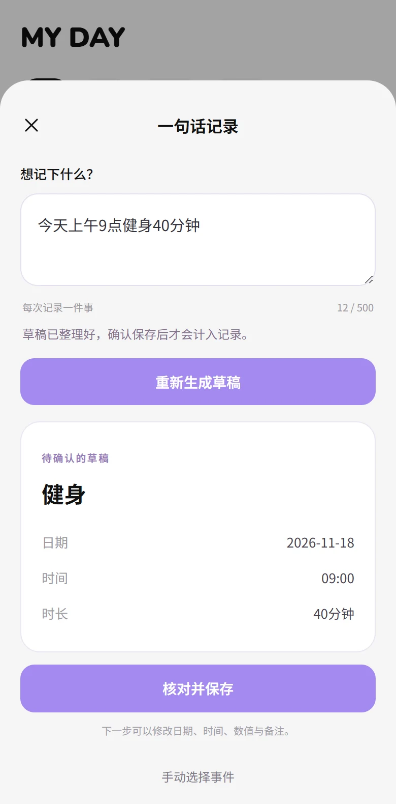

记法自己定
网球记次数，健身记时长，体重记数值。自定义事件、图标与颜色，让记录方式贴近个人习惯。
PRODUCT CASE / 个人产品实践
想留住日常，却要在几个 App 之间切换、迁就固定模板，还要逐项填表？漏记一天，又担心打断连续打卡。
MY DAY 是一本可自由配置的“生活小册子”。用自己的记法留下运动、学习与身体感受；一句话、一次下拉拍照，都能成为记录的开始。重要日子值得期待，零散日常也方便回看。
独立项目负责人 · 需求拆解与差异化设计 / AI交互设计 / Codex辅助开发
公开体验版 · 已完成核心功能与真实模型调用验证

MY DAY / PRODUCT FILM
MY DAY：可自定义的 AI 生活记录工具
你还在几个记录软件之间来回切换吗？模板不合适，打卡又有压力？试试 MY DAY！
自由配置的生活小册子，让记录适应你！
今天上午九点，健身四十分钟。写一句，生成草稿。看一眼，改一改，再确认保存！
次数、时长、数值，按需选择。图标和颜色，都按你的习惯来！
看到喜欢的瞬间？下拉，拍照，记录一下！把眼前的美好，留给以后的自己。
生日、考试、旅行，把期待放进倒计时！
记下经期与身体感受，多了解自己，也多关心自己！
统计和日历，帮你回看积累，找回生活的小片段！
MY DAY，按你的节奏，记录你的生活！现在就试试！
从个人的记录需求出发，关注四种负担：工具分散、模板固定、输入整理费力，以及连续打卡带来的压力。产品围绕“按自己的方式记、方便回头看”做取舍。
网球记次数，健身记时长，体重记数值。自定义事件、图标与颜色，让记录方式贴近个人习惯。
一句话生成可修改草稿，喜欢的瞬间下拉拍照。想记的内容，有更短的输入路径。
日常、图文、经期和重要日子放在同一记录空间；用统计与日历回看积累，也为下一次期待留位置。
设计取舍围绕已发生的生活展开，允许记录有自己的节奏；不把每一天都变成必须完成的任务。
用户已经知道发生了什么。AI的价值，是把口语整理成字段，减少选择事件、切换日期和逐项填写的操作。
“今天上午9点，健身40分钟。”
接入千问，匹配事件并提取日期、时间与记录数值。
结果可编辑，保存后进入原有统计和日历。
缺失具体时间时请用户补充；按次数记录的“游泳40分钟”，记为1次并将时长放入备注。解析失败时保留手动记录入口。

成熟工具各有侧重。MY DAY关注的使用场景是：同一个人的运动、身体感受与生活片段，需要不同的记法，却希望在一个地方留下、回看。
待办、提醒、习惯等能力适合安排任务、培养规律。当用户只想留住日常，持续完成目标也可能成为负担。
以个人生活事件为中心，自由选择次数、时长或数值；不要求把每一条生活记录设成待完成任务。
文字、照片与回顾适合保存经历。对同时想看运动次数、累计时长和生活照片的人，跨工具整理仍可能费力。
日常事件、下拉拍照、经期记录和倒计时各有入口，再用统计与日历集中回顾，减少分散记录的来回切换。
参考两款产品官方功能页，2026.11.18核对。以上比较使用重心与场景取舍；AI输入、自定义和日历等能力并非MY DAY独有。
将需求与交互方案实现为可体验网页，完成公开网页与云端AI接口部署。
验证真实模型调用、草稿编辑、确认保存及刷新后记录保留等核心流程。
观察记录耗时、草稿修改与回看行为，通过用户反馈检验设计是否减轻负担。
沿着“输入更轻、配置更合适、回看更方便”继续迭代。以下均为后续规划，优先级将结合实际反馈调整。
探索快速查看日常事件与重要日子，并缩短进入记录页的路径。
计划验证：记录入口使用情况 · 开始记录所需操作补充事件别名、相对日期与单位场景；提供可修改的配置示例，保留自由定义的空间。
计划验证：草稿修改比例 · 首次记录完成情况加强事件、日期与图文的联动查找，探索更直观的周期回顾。
计划验证：历史查找成功情况 · 回顾使用情况